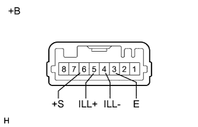
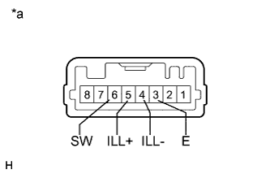

ВЫКЛЮЧАТЕЛЬ ОТОПИТЕЛЯ > ПРОВЕРКА |
| 1. ПРОВЕРЬТЕ ВЫКЛЮЧАТЕЛЬ ПОДОГРЕВАТЕЛЯ В СБОРЕ |
|  |
Измерьте сопротивление в соответствии со значениями, приведенными в таблице ниже.
| Контакты для подключения диагностического прибора | Положение переключателя | Заданные условия |
| 6 (+S) - 3 (E) | Выключатель подогревателя выключен | 10 кОм или более |
| Выключатель подогревателя включен | Менее 1 Ом |
Подайте напряжение аккумуляторной батареи на разъем и проверьте, горит ли светодиод.
| Условия измерений | Заданные условия |
| Положительный (+) вывод аккумуляторной батареи → контакт 5 (ILL+) Отрицательный (-) вывод аккумуляторной батареи → контакт 4 (ILL-) | Светодиод светится |
| *a | Устройство с неподсоединенным жгутом проводов (выключатель отопителя в сборе) |
| 2. ПРОВЕРЬТЕ ВЫКЛЮЧАТЕЛЬ ПОВЫШЕНИЯ ЧАСТОТЫ ВРАЩЕНИЯ КОЛЕНЧАТОГО ВАЛА НА ХОЛОСТОМ ХОДУ |
|  |
Измерьте сопротивление в соответствии со значениями, приведенными в таблице ниже.
| Контакты для подключения диагностического прибора | Положение переключателя | Заданные условия |
| 6 (SW) - 3 (E) | Выключатель повышения частоты вращения коленчатого вала на холостом ходу выключен | 10 кОм или более |
| Выключатель повышения частоты вращения коленчатого вала на холостом ходу включен | Менее 1 Ом |
Подайте напряжение аккумуляторной батареи на разъем и проверьте, горит ли светодиод.
| Условия измерений | Заданные условия |
| Положительный (+) вывод аккумуляторной батареи → контакт 5 (ILL+) Отрицательный (-) вывод аккумуляторной батареи → контакт 4 (ILL-) | Светодиод горит |
| *a | Устройство с неподсоединенным жгутом проводов (выключатель повышения частоты вращения коленчатого вала на холостом ходу) |